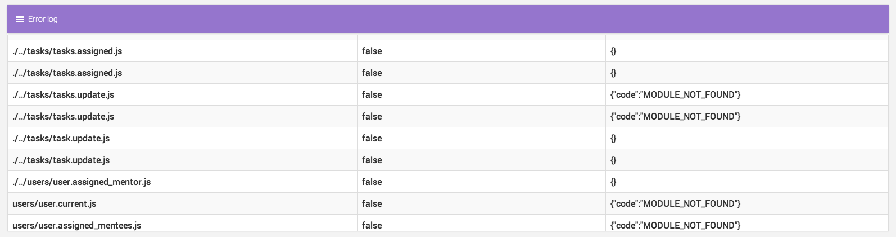
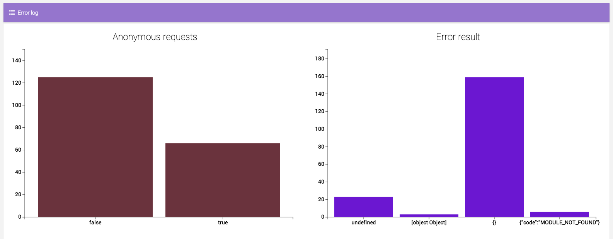

Testing
I have a number of tests suites including a UI interface for use by system admins for ensuring quality in the product and monitoring of site status from unit tests, coverage and cyclomatic complexity testing
API error reports
- Logging of all API's for UI output
- UI interface with tables and charts of crunched data
- Easy acknowledgement of error prone API's or files and their corresponding errors


Code coverage
- Istanbul reports are produced that outline which lines have been tested
- Usually kept at 100%
- Ensures no slipping in unit testing
- Clear acknowledgement of coverage
- Confidence in completing and commiting features

REST Endpoint testing
- All of the API's are covered by tests
- Tests run all functions of the API's manually
- Custom testing framework built ontop of open source library API-Easy
- Database breakdown functions are ran for ensuring database state in each test
- Setup of the database can be performed before each test, for ensuring database state
- Expecting of error status' i.e 200's, 404's etc

Cyclomatic complexity monitoring
- Cyclomatic complexity is measured accross the code base to ensure that it remains below 5